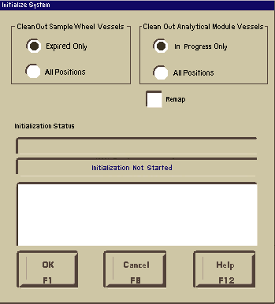

System Initialization Operating Principles
Purpose
This document provides an overview of System Initialization.
System Initialization Overview
These actions are performed when System Initialization occurs with the instrument in Ready or Not Ready mode:
- All pressures are checked.
- The wash buffer reservoir is filled (filling occurs only if the system has seen the low sensor trip since the last software restart).
- All devices are homed.
- All in-progress vessels on the right side of the instrument are disposed of (incubator pick-and-place, incubator wheel, wash pick-and-place, wash carousel).
- All samples in sample pick-and-place are removed.
- All vessels in reagent carriages are removed.
- All vessels in the supply carriage may or may not be removed. All expired sample vessels are removed.
- All reagent storage pack locations are verified (when Remap is selected).
- All devices are move to their 'initial' positions.
Note:
- The operations of checking the system during initialization (Sample Storage, Analytical Module, and Reagent Storage) are performed synchronously.
- System Initialization time varies, depending on the status of the modules and the components being initialized.
- Example: If the wash buffer reservoir is:
- full, then the filling operation takes no time.
- empty, then the filling operation takes up to 1 minute.
- Example: If the wash buffer reservoir is:
Initialize System Screen

System Initialization Options
| Initialization Option | Overview | Time Required (Maximum) |
|---|---|---|
| Clean Out Sample Wheel Vessels | Two options are available:
|
10 Minutes * |
| Clean Out Analytical Module Vessels | Two options are available:
|
15 Minutes * |
| Remap | The operator selects Remap to check all position inside the reagent storage module. | 6 Minutes * |
* Time Required Notes:
- Initialization times shown are worst case, i.e.,
- Wash buffer reservoir is empty.
- Sample wheel is full.
- Incubator wheel is full.
- Carriages are full.
- Wash carousel is full
- Reagent storage is full.
- Some initialization operations occur simultaneously.
System Initialization Activities
| When this device is initialized | This action is performed |
|---|---|
| Bulk RV Feeder |
|
| Carriages - Supply and Reagent |
|
| Fluidics Pumps and Valves |
|
| Incubator Pick and Place |
|
| Incubator Wheel |
|
| Reagent Pipettors |
|
| Reagent Storage |
|
| Sample Pick and Place |
|
| Sample Pipettor |
|
| Sample Wheel |
|
| SPU |
|
| Wash Arm |
|
| Wash Pick and Place |
|
| Wash Carousel |
|